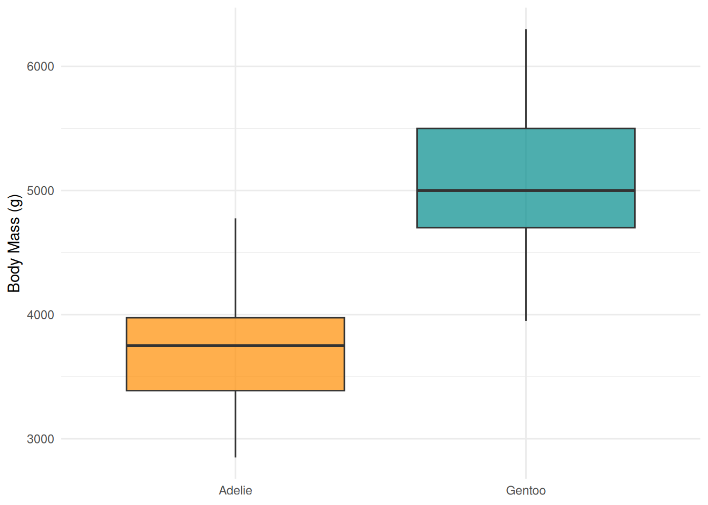
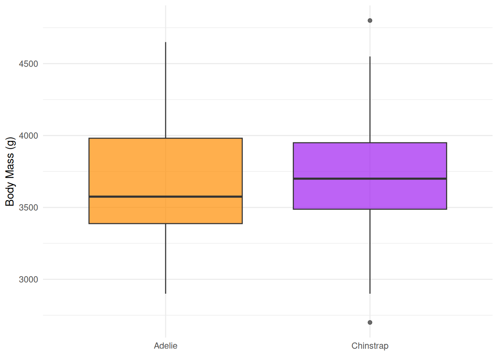
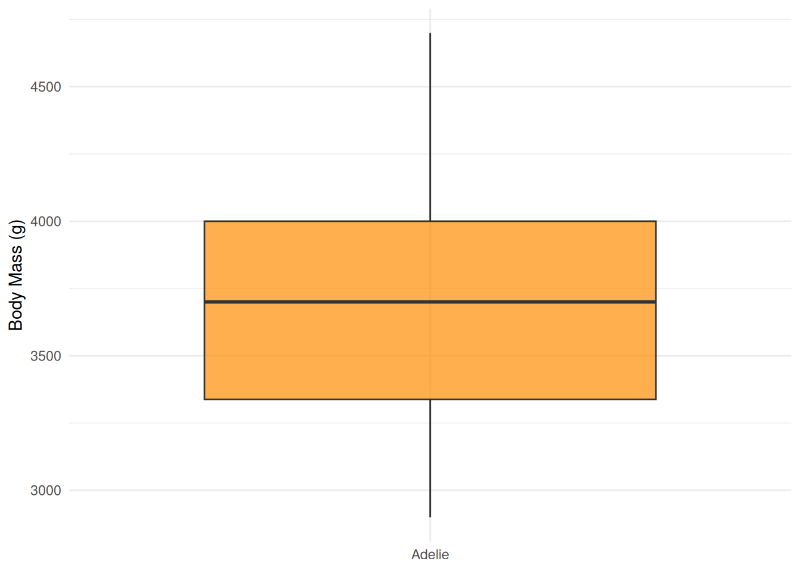

Code
library(palmerpenguins)
library(ggplot2)
library(dplyr)
library(gt)library(palmerpenguins)
library(ggplot2)
library(dplyr)
library(gt)The Palmer Penguins dataset contains measurements for 344 penguins from three species observed on three islands in the Palmer Archipelago, Antarctica.
ggplot(penguins, aes(x = flipper_length_mm, y = body_mass_g, color = species, shape = species)) +
geom_point(size = 2.5, alpha = 0.7) +
scale_color_manual(values = c("darkorange", "purple", "cyan4")) +
labs(
x = "Flipper Length (mm)",
y = "Body Mass (g)",
color = "Species",
shape = "Species"
) +
theme_minimal()penguins |>
filter(!is.na(body_mass_g)) |>
group_by(species) |>
summarise(
Count = n(),
`Mean Body Mass (g)` = round(mean(body_mass_g), 0),
`Mean Flipper Length (mm)` = round(mean(flipper_length_mm, na.rm = TRUE), 1),
`Mean Bill Length (mm)` = round(mean(bill_length_mm, na.rm = TRUE), 1),
`Mean Bill Depth (mm)` = round(mean(bill_depth_mm, na.rm = TRUE), 1)
) |>
gt() |>
tab_header(
title = "Penguin Species Summary",
subtitle = "Averages across all islands"
) |>
cols_label(species = "Species") |>
tab_source_note("Source: palmerpenguins R package")| Penguin Species Summary | |||||
| Averages across all islands | |||||
| Species | Count | Mean Body Mass (g) | Mean Flipper Length (mm) | Mean Bill Length (mm) | Mean Bill Depth (mm) |
|---|---|---|---|---|---|
| Adelie | 151 | 3701 | 190.0 | 38.8 | 18.3 |
| Chinstrap | 68 | 3733 | 195.8 | 48.8 | 18.4 |
| Gentoo | 123 | 5076 | 217.2 | 47.5 | 15.0 |
| Source: palmerpenguins R package | |||||
penguins |>
filter(island == "Biscoe") |>
ggplot(aes(x = species, y = body_mass_g, fill = species)) +
geom_boxplot(alpha = 0.7, show.legend = FALSE) +
scale_fill_manual(values = c("darkorange", "cyan4")) +
labs(x = NULL, y = "Body Mass (g)") +
theme_minimal()
penguins |>
filter(island == "Dream") |>
ggplot(aes(x = species, y = body_mass_g, fill = species)) +
geom_boxplot(alpha = 0.7, show.legend = FALSE) +
scale_fill_manual(values = c("darkorange", "purple")) +
labs(x = NULL, y = "Body Mass (g)") +
theme_minimal()
penguins |>
filter(island == "Torgersen") |>
ggplot(aes(x = species, y = body_mass_g, fill = species)) +
geom_boxplot(alpha = 0.7, show.legend = FALSE) +
scale_fill_manual(values = c("darkorange")) +
labs(x = NULL, y = "Body Mass (g)") +
theme_minimal()
The Palmer Penguins dataset was collected by Dr. Kristen Gorman and the Palmer Station, Antarctica LTER, a member of the Long Term Ecological Research Network. The data were collected from 2007–2009 and include the following variables:
This dataset is commonly used as an alternative to the iris dataset for data exploration and visualization examples.
penguins |>
summarise(across(everything(), ~ sum(is.na(.)))) |>
gt() |>
tab_header(title = "Missing Values per Column")| Missing Values per Column | |||||||
| species | island | bill_length_mm | bill_depth_mm | flipper_length_mm | body_mass_g | sex | year |
|---|---|---|---|---|---|---|---|
| 0 | 0 | 2 | 2 | 2 | 2 | 11 | 0 |